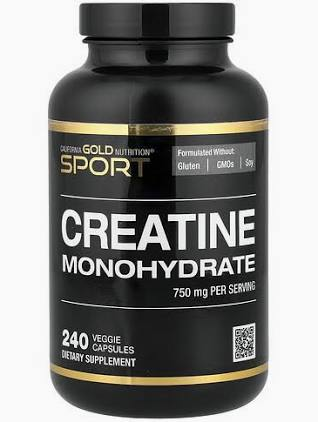
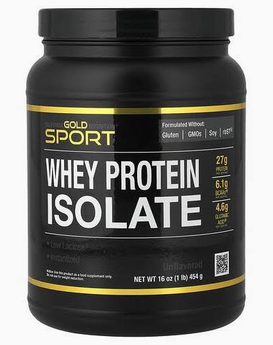
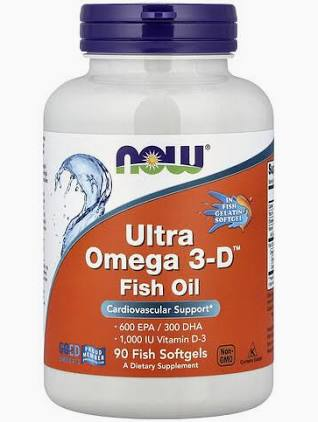

Креатин моногидрат
Способствует росту силовых показателей, увеличению запасов АТФ и гидратации мышечных клеток.
Персональные рекомендации и расчет КБЖУ от сертифицированных специалистов Bonanza Gym.
Для достижения заметных результатов в тренажерном зале важна не только интенсивная физическая нагрузка, но и сбалансированное питание. Ниже приведены ключевые принципы потребления белков, жиров, углеводов и базовые ориентиры для прогресса.
| Цель тренировок | Калорийность | Белки (на 1 кг веса) | Углеводы и жиры |
|---|---|---|---|
| Набор мышечной массы | Профицит (+10–15%) | 1.8 – 2.2 г | Умеренный профицит сложных углеводов |
| Сжигание жира (Сушка) | Дефицит (-15–20%) | 2.0 – 2.4 г | Снижение углеводов, полезные жиры |
| Поддержание формы | Баланс (удержание) | 1.6 – 1.8 г | Сбалансированное меню по энергозатратам |

Профицит калорий и гидратация: для стабильного роста мышечных волокон потребление энергии должно слегка превышать ваш суточный базовый расход. Важную роль играет регулярное потребление воды и поддержание высокого уровня запасов АТФ во время интенсивных силовых сессий.
Достаточное количество белка: главный строительный материал (куриная грудка, говядина, индейка, яйца, творог, рыба).
Способствует росту силовых показателей, увеличению запасов АТФ и гидратации мышечных клеток.

Удобный и быстрый источник качественного белка для закрытия белкового окна после нагрузок.

Поддерживают здоровье сердечно-сосудистой системы, суставов и общий гормональный фон.
Питание — это 70% вашего успеха в построении качественного тела. Дисциплина на кухне важнее дисциплины под штангой.
Если вы не знаете, как составить личный КБЖУ-план, отправьте заявку на консультацию: